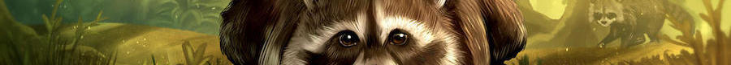
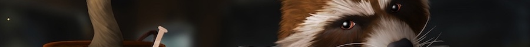

Лисьи Сказки
Классификации сказочных сюжетов по жанровым разновидностям:
- сказки о животных;
- собственно сказки; в группу входят следующие жанры:
- волшебные сказки;
- легендарные сказки;
- сказки о глупом чёрте (великане);
- анекдоты.

Сказка «Загадочная история енотских полосок». Часть1. «Туманный апокалипсис полосок»
Перламутровый туман окутал лесное убранство. Фанаты мультфильма «Ёжик в тумане» вышли на прогулку в поисках лошадки. Лиса выглянула в окошко, с удовольствием вдохнула фреш еловых иголочек и решила отправиться на променад по осенним аллеям леса. Не пристало Рыжей лесной деве в одиночестве бродить, подумала Лисица и решила прихватить с собой её полосатого приятеля Ена.
Енот обожал, когда его лесные владения утопали в туманной мгле, он любил совершать вылазки в такие дни и устраивать фантастические эвенты.Эвентами назывались разнообразные мероприятия и встречи для жителей леса. Это могли быть различного рода выставки, концерты, театральные представления и прочие празднества, которые Еня с любовью организовывал для своих подопечных и справлял их всякими мистическими трюками.
Лисица знала об этих тонкостях енотовой души и решила сделать ему сюрприз в форме пикника. Рыжая напрягла всю свою смекалку, чтобы приготовить яства для совместной прогулки и приступила к кулинарному действию. Лисья кухня постепенно стала наполняться изысканными ароматами трав. Ее хаотичное движение лап больше напоминало обряд африканского шамана. В котёл для приготовления лакомств летела мышиная грудка, лесная фасоль, свиные ушки и много других секретных ингредиентов Лукавой Лисы. Так Рыжая готовила Лисоенский рассольник. Потом она достала мышемолку (это как мясорубка) и смонстрячила с помощью неё колбаску... Читать полностью
Сказка «Загадочная история енотских полосок». Часть2. «Одупление»
Шур шур шур… Пых пых… Шорох дыхания, биение сердца, легкое колыхание хвоста… Лиса очухалась и начала вяло водить носом в глубоком смятении. Она возлежала на кушетке, обтянутой трудами тутового шелкопряда, которая дарила приятную прохладу лисьей шерсти. Спинка ее ложе, была исполнена в виде земляничных кустов, но при этом имела прочность и твердость на ощупь.
По Лисе хаотично ползали, а точнее плясали добродушные улитки, подключённые к электрическим ниточкам. Рыжая повернула моську и увидела, что эти ниточки тянутся к фиолетовому ящику с бурлящим сосудом, а из него доносится пение кузнечиков, как на лугу в ночной час.
Лисицу так шарахнуло удивление от увиденного, что она снова рухнула в обморочное состояние. Немного погодя, она пришла в себя, прокрутила последние воспоминания в лисьем мозгу и, собравшись с духом приоткрыла глаз.
Рядом с кушеткой суетливо бегал Полоскунский и что-то творил. Рыжая подумала, что это могут быть галлюцинации и решила повнимательнее рассмотреть представшую перед ней сцену. Полосатый в странном наряде носился вокруг хрустального стола, который был уставлен мензурками, колбами, порошками перламутровых цветов, и что-то вытворял с мордочкой знатока. Рыжая прищурилась ещё сильнее, чтобы рассмотреть, в чем рассекает её загадочный дружище. На ушки Ени был натянут войлочный, сиреневый беретик, напоминающий перевёрнутый цветок колокольчика с листочками на околоплодной ножке. На лапках красовались мокасины из серого войлока, а на тельце сюртук, сплетённый из подснежников и фиалок. Носик Полосатого украшало пенсне в оловянной оправе...Читать полностью

Сказка «Загадочная история енотских полосок» Часть3. «Раскрытие заговора Енотских полосок»
«Ахтунг, Лиса! Оттопырь ухо и приготовь все свои радары. Сейчас Енот окунёт тебя в страшную тайну своих открытий», — с этими словами Полоскунский ловко подпрыгнул, сделал сальто и очутился около бордового занавеса. Еня просто упивался страстью к мистификациям и театральным примочкам.
Полосатый резко отдернул занавес и перед Лисой предстало нечто, что являлось таинственным изобретением её друга. Это был огромный, синий мандарин в очищенном виде. Высота его практически достигала крыши. Весь этот чудной аппарат был отлит из венецианского стекла, а дольки мандарина сверкали и ослепляли неоновыми фонариками. «Что>«Ух ты ж ёжжжжж»,- промолвила Лисица от дикого удивления и распахнула пасть.«Что это, Еник? — воскликнула Рыжая. — Что это за машина?»
«Надеюсь ты не будешь испытывать её на Лисе?» — трепеща от страха уточнила подруга Енота. « Хе хе, Лися, я ставлю опыты только на козявках и то с их письменного согласия и на себе конечно»,- возразил Полосатый. «Так вот, Рыжая моська, представляю твоему вниманию это лесное ноу-хау из-под моих лап», — с гордостью тявкнул Ен и исчез за долькой мандарина.
« Еня, куда ты подевался? Ну-ка, вылезай обратно», — воскликнула Лисица и начала крутить моськой, дабы обнаружить исчезнувшего друга. Она заглянула во все углы. Енота нигде не было. И тут Лиса услышала знакомое: « Мухахааааа!» Читать полностью
Лисьи Комиксы
Больше Лисьих комиксов на странице автора